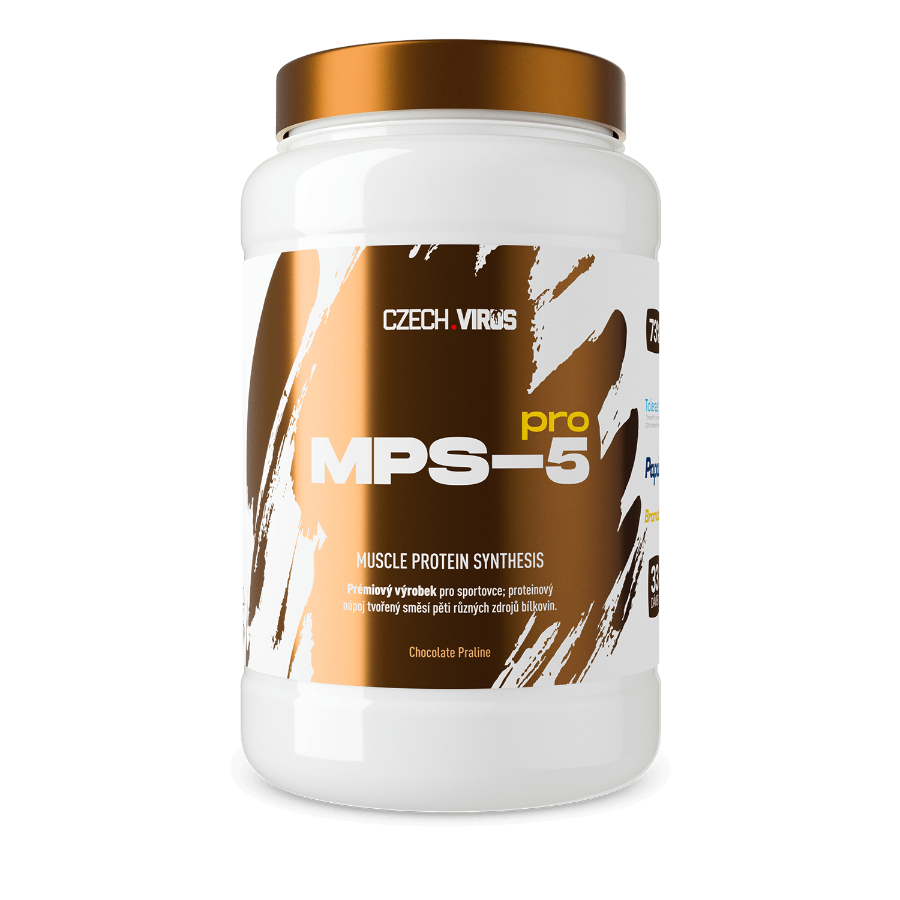
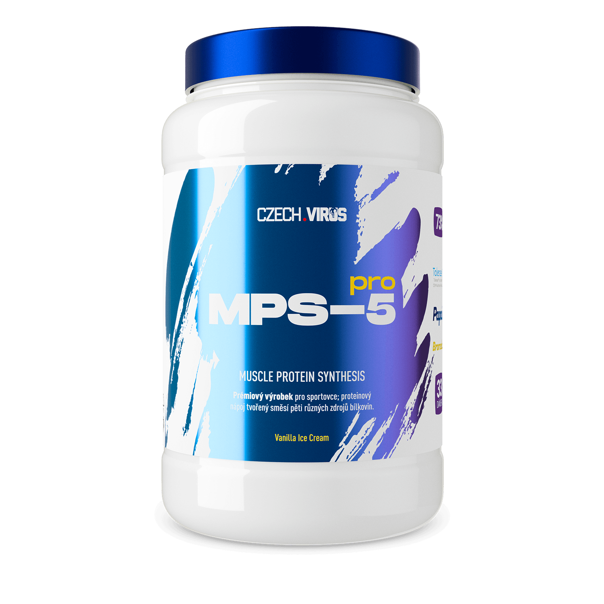
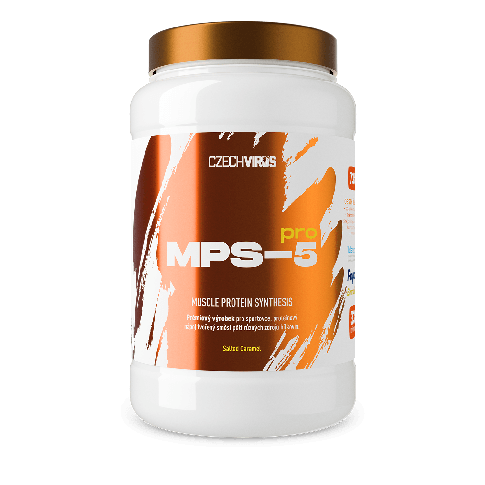
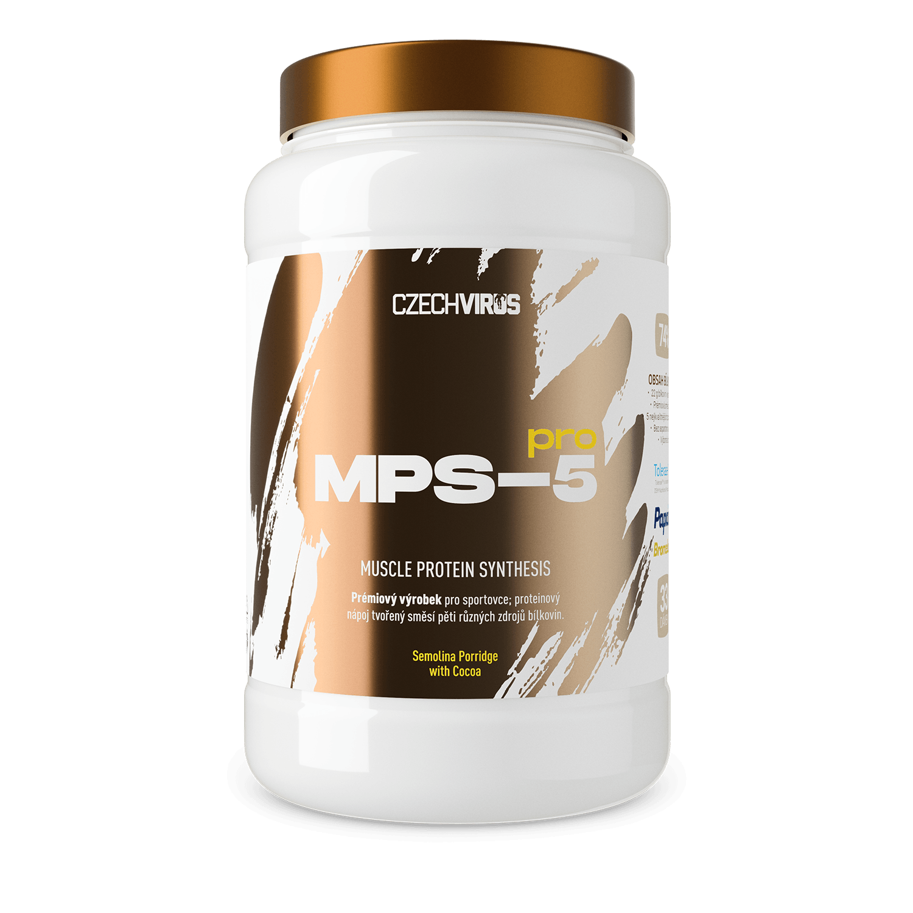
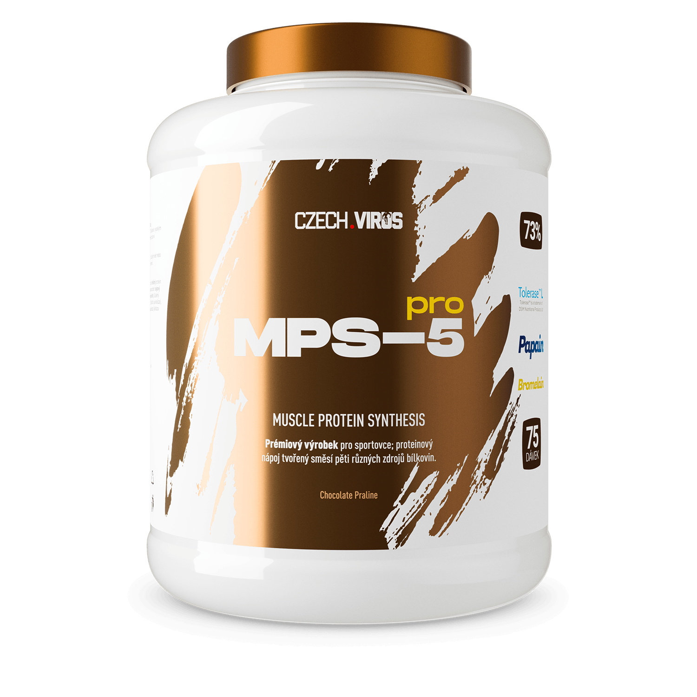

MPS-5 PRO®
MPS-5 PRO je vysoce kvalitní protein složený z 5 různých zdrojů bílkovin. Na základě vědeckých studií doporučujících více zdrojů proteinů pro maximální anabolismus vznikl tento unikátní blend, který ti dodá bílkoviny po celý den.

Co najdeš uvnitř?
Metoda Cross Flow Microfiltration přes speciální keramické filtry zajišťuje nejvyšší kvalitu syrovátkového koncentrátu.
Micelární kasein zajišťuje pomalé uvolňování aminokyselin a zásobuje svaly po mnoho hodin.
Nejčistší forma syrovátkové bílkoviny s minimem tuků a sacharidů.
Předštěpená forma pro bleskové vstřebání ihned po tréninku.
Bez tuku, cholesterolu a laktózy. Kompletní aminokyselinový profil z vaječných bílků.
Rozdělení proteinů

Profil uvolňování bílkovin v čase

Ve výše vyobrazeném schéma uvolňování různých druhů bílkovin lze vidět, že se jeví jako nejvýhodnější právě směs různých druhů proteinů.
Vytvořeno na základě informací ze studie od G. Paul, Journal of American College of Nutrition, 2009
Trávicí enzymy pro maximální využití
Tolerase™ L
Kyselá laktáza pro snadné trávení laktózy. Ideální i pro ty s citlivým trávením.
Papain
Proteolytický enzym z papáji pro efektivní štěpení bílkovin.
Bromelain
Enzym z čerstvého ananasu podporující trávení a vstřebávání aminokyselin.
Aminokyselinové spektrum
MPS-5 PRO® v akci
Dostupné příchutě
Čokoládová Pralinka

Vanilková Zmrzlina

Salted Caramel

Semolina Porridge with Cocoa
Proč zvolit MPS-5 PRO?
MPS-5 PRO® není jen obyčejný protein. Je to precizně navržená směs 5 zdrojů bílkovin s trávicími enzymy, která zajistí optimální zásobení svalů aminokyselinami po celý den.
